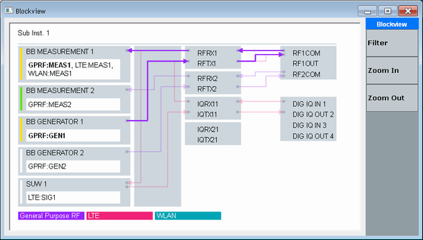
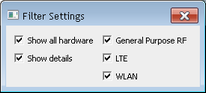

The block view provides an overview of the configured signal routing settings.
To open the dialog box, press the BLOCK VIEW key on the (soft-) front panel, or the  button.
button.

The block view shows the most important hardware blocks relevant for the signal paths. From left to right, the shown hardware blocks are: the units where the firmware applications are running, the TRX modules and the connectors.
Colored lines show the configured signal paths. Bold lines refer to currently used signal paths. The colored boxes at the bottom indicate which line color is used for which technology.
The hardware blocks on the left show the states of the loaded firmware applications. Currently running firmware applications are listed bold. A yellow vertical line means "RUN" or "ON", green means "RDY", red indicates that an error occurred and white means "OFF".
Opens a dialog box that allows you to hide parts of the diagram.

- "Show All Hardware": Deselect the checkbox to hide unused hardware units (boards, modules and connectors).
- "Show Details": Deselect the checkbox to hide details like for example the signaling modules mounted to an SUU.
- Technologies on the right: Deselect a checkbox to hide the corresponding technology.
Increases or redudes the size of the block view diagram.